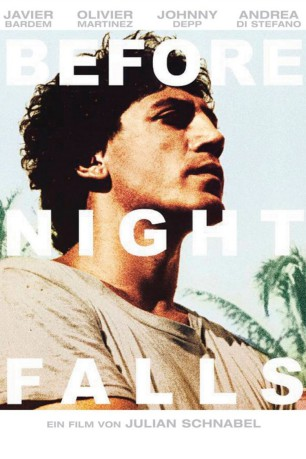
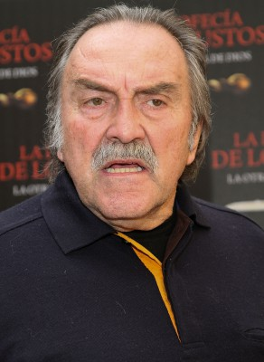
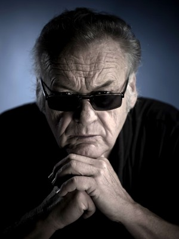
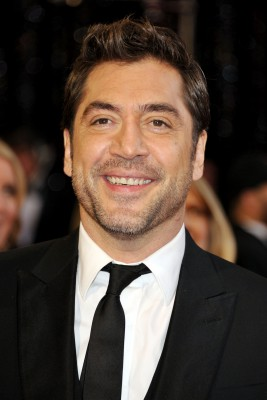
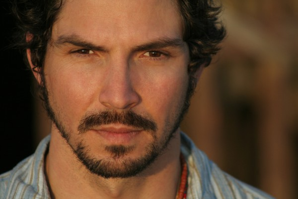
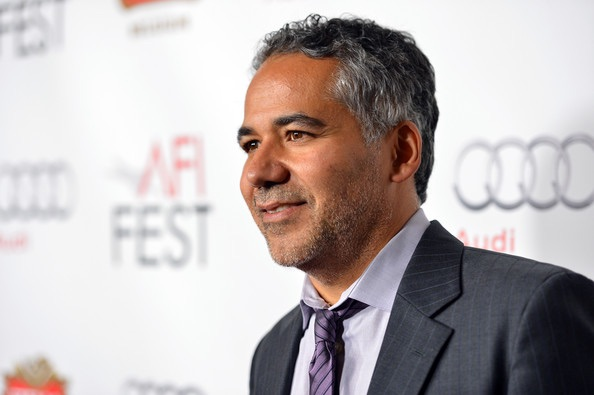
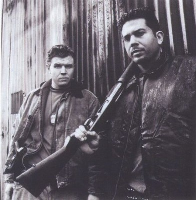

#3689 Bevor es Nacht wird
Auszeichnungen: für 1 Oscars nominiert
 
 IMDB-Wertung: 7.3 / 10
IMDB-Wertung: 7.3 / 10  Metascore: 0
Metascore: 0 
Before Night Falls beruht auf dem Leben des kubanischen Romanschriftstellers Reinaldo Arenas, der 1943 in der Provinz Oriente geboren wurde und 1990 im Exil in New York City den Freitod wählte. Der Film kontrastiert die frühen Jahre seiner Kindheit in absoluter Armut und Freiheit mit den Greueln und Schwierigkeiten, mit denen er als zensurierter und verfolgter Autor und Homosexueller in Castros Kuba konfrontiert war.
Jahr: 2000
Dauer: 127 Minuten
FSK:
Land: USA Studio: Fine Line FeaturesTonspuren:
Untertitel:
Auflösung: 720p (1280x720) Größe: 3614 MB
Genre: Drama, Biographie
Regisseur: Julian Schnabel
Drehbuch: Geoff LaTulippe
Soundtrack:
Darsteller:
- Giovanni Florido als Young Reinaldo
-  Pedro Armendáriz Jr. als Reinaldo's Grandfather
 Diego Luna als Carlos
Diego Luna als Carlos- Lia Chapman als Lolin
- Sean Penn als Cuco Sanchez
-  Jerzy Skolimowski als Professor
-  Javier Bardem als Reinaldo Arenas
- Patricia Reyes Spíndola als María Teresa Freye de Andrade
 Michael Wincott als Heberto Zorilla Ochoa
Michael Wincott als Heberto Zorilla Ochoa- Hector Babenco als Virgilio Piñera
- Andrea Di Stefano als Pepe Malas
- Ofelia Medina als Landlady
 Olivier Martinez als Lazaro Gomez Carilles
Olivier Martinez als Lazaro Gomez Carilles-  Maurice Compte als Nicolas Abreu
-  John Ortiz als Juann Abreu
 Vincent Laresca als Jose Abreu
Vincent Laresca als Jose Abreu- Rene Rivera als Recruit Driver
- Najwa Nimri als Fina Zorilla Ochoa
- Marisol Padilla Sánchez als Margarita Camacho
- Eduardo Arroyuelo als Teenager #2
- Khotan Fernandez als Young Man with bird
 Johnny Depp als Bon Bon / Lieutenant Victor
Johnny Depp als Bon Bon / Lieutenant Victor- Diahnne Abbott als Blanca Romero
-  Benjamín Benítez als Rudy , uncredited
 Fidel Castro als Himself, anti-Marielito speech , archive footage, uncredited
Fidel Castro als Himself, anti-Marielito speech , archive footage, uncredited- Adrian Makala als Student , uncredited
- Olatz López Garmendia als Reinaldo's Mother
- Loló Navarro als Reinaldo's Grandmother
- Batan Silva als Reinaldo's Father
- Carmen Beato als Teacher
- Cy Schnabel als Smallest School Child
- Olmo Schnabel als Smallest School Child
- Vito Schnabel als Teenage Reinaldo
- Aquiles Benites als Translator
- Ewa Piaskowska als Pretty Blonde Student
- Marlene Díaz als Woman in car #1
- Olga Borayo als Woman in car #2
- Santiago Magill als Tomas Diego
- Manolo García als Faustino
- Lola Schnabel als Girl With Keys
- Lois Barragán als Woman - UNEAC
- Eduardo Antonio als Nightclub Singer
- Stella Schnabel als Valeria
- Manuel González als Jose Lezama Lima
- Claudette Maillé als Maria Luisa Lima
- Chanel Puertas als Blonde on the beach
- Manolo Rivero als Royal Gay
- Nemo als Pedro the bus driver
- Andrea Fassler als French Tourist
- Magda als Santería Dancer
Datei: X:\2000\Bevor es Nacht wird (2000, FSK, 1280x720).mkv seit 20.05.2016
Festplatte: HD 1996-2002
 Es gibt insgesamt 82 Filme in der Gruppe '2000'
Es gibt insgesamt 82 Filme in der Gruppe '2000'